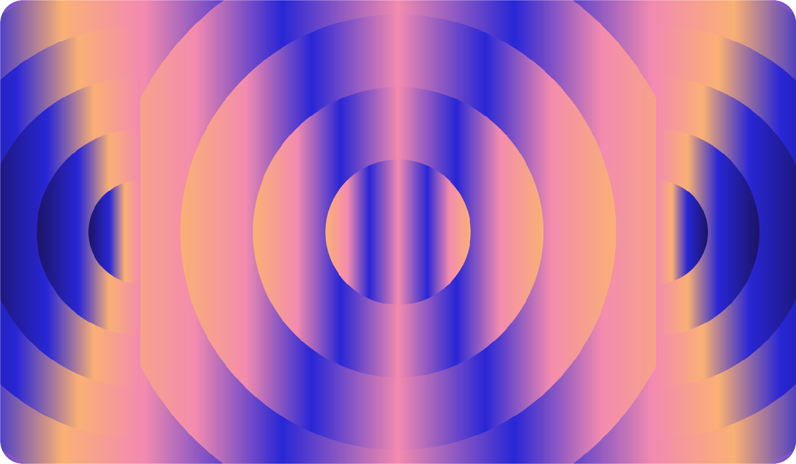

Case Study
Helping people make peace with the internet — building the brand story, content strategy, and editorial voice for a platform tackling our rising digital dependence.

The Platform
Meta Well exists at the intersection of digital wellness and cultural criticism. In a world of tech addiction, doom scrolling, zoom fatigue, and post-VR sadness, the platform provides curated content, original research, expert interviews, and practical tools to help people rethink their relationship with technology — without asking them to abandon it entirely.
The challenge isn't convincing people that their digital habits need attention. It's building a brand voice that meets them with empathy instead of judgment, offers practical steps instead of guilt, and earns trust in a space crowded with wellness grifts and performative digital detoxes.
The Challenge
Digital wellness is a category with a credibility problem. Between corporate mindfulness apps owned by the same companies causing the problem and influencers hawking "digital detox retreats," the space is noisy with solutions that don't address root causes. Meta Well needed a brand voice that was intellectually honest, culturally literate, and genuinely helpful — one that could hold complexity without losing accessibility.
The platform also needed a content strategy that would build an audience organically through editorial quality, not volume. Every piece had to earn its place in someone's already-overwhelmed feed.
The Approach
Digital wellness doesn't need another app telling you to put your phone down. It needs honest, culturally intelligent content that helps people understand why they can't — and what to do about it.
What I Did